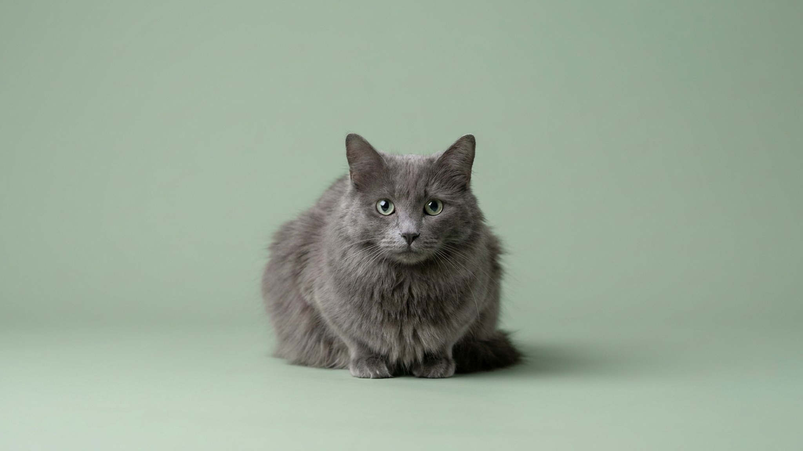

Приходит гость — и небелунг растворяется. Нет ни приветствия, ни интереса к незнакомцу. Кошка просто уйдёт в укрытие и выйдет, когда чужой исчезнет. Это не дикость и не страх — это характер породы: осторожный интроверт, который отдаёт свою преданность одному-двум людям, и полностью. Если вы ищете кошку для тихого дома и готовы стать «её человеком», небелунг — редкое и точное попадание.
🐾 Всё о вашем питомце — в одном приложении
AI-ветеринар, дневник, напоминания о прививках и уходе. Установите AnimaLife — это бесплатно, в Telegram и MAX.
Небелунг часто называют длинношёрстной версией русской голубой — и это близко к правде исторически, но неточно по сути. Порода выведена в США в 1980-х годах от кошек с длинной шерстью голубого окраса и зарегистрирована как самостоятельная. Стандарт фиксирует полудлинную шелковистую шерсть с характерным серебристым типингом, придающим шубке едва заметный мерцающий отлив. Телосложение изящное, длинное, с пышным хвостом-плюмажем.
Порода редкая: небелунгов мало даже в Европе, в России их единицы. Если встретили предложение о продаже — стоит внимательно проверить питомник и родословную.
Небелунг — кошка одного человека. Она выбирает «своего» и держится рядом: следует по квартире, укладывается рядом вечером, ждёт у двери. К остальным членам семьи может относиться тепло, но дистанцию держит. К незнакомым людям — настороженно до полного игнора.
Если небелунг прячется при каждом поводе — это нормально для породы, не тревожный сигнал. Нужно дать кошке укрытия и не заставлять выходить силой.
Несмотря на длину, шерсть небелунга имеет шелковистую текстуру и почти не склонна к образованию колтунов — она скользкая и не сваливается так быстро, как у персов или мейн-кунов. При регулярном уходе поддерживать её несложно.
Небелунг не требует сложных условий — ему нужна предсказуемость и несколько правильно расставленных точек в пространстве.
🐾 Спросите AI-ветеринара прямо сейчас
AnimaLife — приложение, где AI-ветеринар отвечает на вопросы о кошке или собаке 24/7. Бесплатно, без записи и очередей.
🐾 Понравился разбор?
Подпишитесь на канал — каждый день разбираем по одному тревожному симптому у кошек и собак: что в пределах нормы, а когда пора к врачу. Подпишитесь, чтобы не пропустить разбор, который может спасти здоровье вашего питомца.